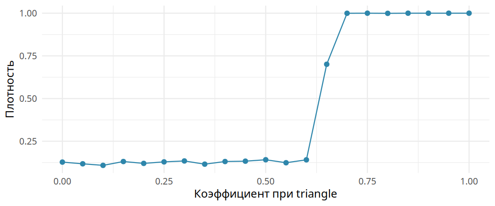
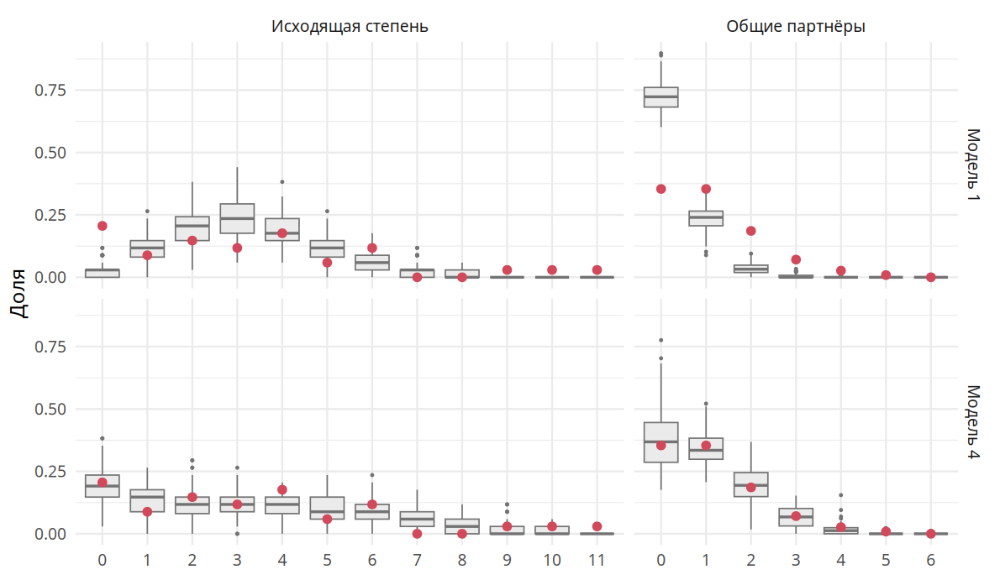

| Исходная сеть | + Кайрат и Арман | + Кайрат и Жанна | |
|---|---|---|---|
| Плотность | 0,50 | 0,60 | 0,60 |
| Средняя степень | 2,00 | 2,40 | 2,40 |
| Разброс степеней (ст. откл.) | 0,71 | 0,55 | 0,89 |
| Кластеризация | 0,50 | 0,33 | 0,60 |
| Среднее расстояние | 1,70 | 1,40 | 1,50 |
| Диаметр | 3,00 | 2,00 | 3,00 |
6 Экспоненциальные модели случайных графов
Глава 5 закончилась выводом: в реальных сетях вероятность связи зависит от контекста. Ответная связь вероятнее случайной. Связь, замыкающая треугольник, тоже вероятнее. Похожие люди связаны чаще непохожих. Экспоненциальные модели случайных графов (exponential random graph models, ERGM) позволяют учесть всё это сразу и проверить, какие процессы действительно работают в сети. Сегодня это основной инструмент статистического моделирования социальных сетей (Hunter и др. 2008 г.). В этой главе мы разберём логику ERGM, научимся читать её коэффициенты и построим модель школьной сети.
6.1 Зачем нужна особая статистика
Связь между двумя узлами можно считать бинарной переменной \(y_{ij}\). Она равна 1 при наличии связи и 0 при её отсутствии. Бинарные переменные обычно моделируют логистической регрессией. Напомним её устройство. Логарифм шансов события линейно зависит от объясняющих переменных:
\[ \text{logit}(p) = \log \frac{p}{1 - p} = \beta_0 + \beta_1 x_1 + \dots \]
Здесь \(p\) означает вероятность события, например вероятность связи. Отношение \(p / (1 - p)\) называют шансами: это вероятность того, что событие произойдёт, деленная на вероятность того, что оно не произойдёт. Вероятности 0,5 соответствуют шансы 1, вероятности 0,8 соответствуют шансы 4 («четыре к одному»). Знак \(\log\) обозначает натуральный логарифм. Логарифм шансов называют логитом. Справа стоит линейная комбинация, как в обычной регрессии: свободный член \(\beta_0\) плюс коэффициенты \(\beta_1, \beta_2, \dots\), умноженные на значения объясняющих переменных \(x_1, x_2, \dots\). Многоточие означает, что переменных может быть сколько угодно. Обратное преобразование \(\text{logit}^{-1}\) переводит логит обратно в вероятность: \(p = 1 / (1 + e^{-\text{logit}})\). В R это функция plogis().
Можно было бы предсказывать связь по атрибутам узлов: полу, возрасту, богатству. Ранние модели сетей так и делали. Модель \(p_1\) описывала логарифм шансов связи через «общительность» отправителя \(\alpha_i\), «привлекательность» получателя \(\beta_j\) и общий эффект взаимности (Holland и Leinhardt 1981 г.).
Беда в том, что логистическая регрессия предполагает независимость наблюдений. Связи в сети не независимы. Вероятность того, что Нуртас назовёт Кайрата другом, зависит от того, назвал ли Кайрат Нуртаса. Вероятность дружбы Кайрата и Жанны зависит от того, сколько у них общих друзей. Вероятность связи зависит от состояния самой сети. В статистике такую зависимость называют эндогенностью. ERGM учитывает её явно.
6.2 Модель
ERGM задаёт вероятность того, что сеть целиком окажется в определённом состоянии:
\[ P(Y = y) = \frac{\exp\{\theta' z(y)\}}{k(\theta)}. \tag{6.1}\]
Здесь \(Y\) означает сеть как случайную величину: набор всех возможных состояний с их вероятностями. Буква \(y\) означает конкретное состояние, например наблюдаемую сеть. Вектор \(z(y)\) состоит из статистик сети: числа связей, числа взаимных диад, числа треугольников, числа связей внутри пола. Статистики выбирает исследователь, исходя из теории. Вектор \(\theta\) содержит коэффициенты при статистиках. Их оценивает алгоритм. Знаменатель \(k(\theta)\) нормирует вероятности так, чтобы их сумма по всем возможным сетям равнялась единице.
Запись \(\exp\{\cdot\}\) означает экспоненту, то есть число \(e\) в степени выражения в скобках. Штрих в записи \(\theta' z(y)\) означает произведение двух векторов: каждый коэффициент умножается на свою статистику, произведения складываются. В модели с двумя статистиками, числом связей и числом взаимных диад, \(\theta' z(y) = \theta_1 \cdot (\text{число связей}) + \theta_2 \cdot (\text{число взаимных диад})\). Экспонента превращает эту сумму в положительное число. Чем больше сумма, тем вероятнее сеть.
Формулу удобно читать как шпаргалку. Вероятность сети тем выше, чем больше в ней тех конфигураций, коэффициенты при которых положительны. Если коэффициент при числе взаимных диад положителен, сети с большим числом взаимных диад вероятнее.
Вычислить \(k(\theta)\) напрямую невозможно. Для этого пришлось бы перебрать все возможные сети. В направленной сети из 30 узлов \(30 \cdot 29 = 870\) возможных связей, а значит \(2^{870} \approx 10^{262}\) возможных сетей. Для сравнения, атомов в наблюдаемой Вселенной около \(10^{80}\). Поэтому ERGM, известные с 1980-х годов, стали практичными лишь с ростом вычислительных мощностей и развитием методов симуляции.
6.2.1 Статистика изменения
К счастью, константа \(k(\theta)\) сокращается, если сравнить две сети, которые отличаются одной связью. Обозначим через \(y_{ij}^{+}\) сеть, в которой связь \(ij\) есть, а через \(y_{ij}^{-}\) ту же сеть без этой связи. Тогда логарифм шансов связи при неизменной остальной сети равен
\[ \log \frac{P(Y_{ij} = 1 \mid \text{остальная сеть})}{P(Y_{ij} = 0 \mid \text{остальная сеть})} = \theta' \left[z(y_{ij}^{+}) - z(y_{ij}^{-})\right] = \theta' \delta_{ij}. \tag{6.2}\]
Слева стоит логарифм шансов связи между узлами \(i\) и \(j\). Вертикальная черта \(\mid\) читается «при условии». Запись \(P(Y_{ij} = 1 \mid \text{остальная сеть})\) означает вероятность связи при условии, что все остальные связи сети уже заданы. В квадратных скобках стоит разность статистик двух сетей: с этой связью и без неё. Разность умножается на коэффициенты так же, как в формуле 6.1. Например, пусть связь \(ij\) добавляет одну связь и замыкает два треугольника. Тогда в модели с членами edges и triangle получаем \(\delta_{ij} = (1, 2)\), а логарифм шансов связи равен \(\theta_{edges} + 2\,\theta_{triangle}\).
Вектор \(\delta_{ij}\) называют статистикой изменения (change statistic). Он показывает, как изменятся статистики сети, если связь \(ij\) появится. Формула выглядит как логистическая регрессия. Роль объясняющих переменных играют изменения статистик. Отсюда простое правило чтения коэффициентов. Коэффициент показывает, на сколько меняется логарифм шансов связи, если её появление увеличивает соответствующую статистику на единицу.
Возьмём сеть «Кайрат и Нуртас» и рассмотрим две возможные новые связи: между Кайратом и Арманом и между Кайратом и Жанной (табл. 6.1). Обе связи одинаково увеличивают число связей, плотность и среднюю степень. Однако связь с Арманом снижает кластеризацию: у Армана появятся два друга, которые не дружат между собой. Связь с Жанной кластеризацию повышает: она замыкает треугольник Кайрат, Асель, Жанна. Если коэффициент при кластеризации положителен, модель сочтёт вторую связь более вероятной.
6.2.2 Первые модели
Посмотрим на модели для флорентийских браков (глава 3). Простейшая модель содержит одну статистику, число связей (edges):
Её коэффициент равен −1,61. Это логарифм шансов любой связи. Перевод в вероятность даёт \(\text{logit}^{-1}(-1{,}61) =
0{,}167\), то есть ровно плотность сети. Модель с одним членом edges есть случайный граф из главы 5.
Добавим число треугольников (triangle). Если связь замыкает \(t\) треугольников, её логарифм шансов равен \(\theta_{edges} + t\,\theta_{triangle}\). Оценка коэффициента при треугольниках равна 0,18, но она незначима (\(p = 0{,}75\)). Брачные союзы флорентийских семей не склонны замыкаться в треугольники.
Добавим вместо треугольников атрибут узла, богатство семьи. Член nodecov("wealth") добавляет к логарифму шансов связи слагаемое \(\theta (w_i + w_j)\), где \(w_i\) означает богатство семьи \(i\). Коэффициент небольшой, но значимый (0,011). Для брака двух беднейших семей (богатство 3) вероятность связи равна 7%. Для брака двух богатейших (146) она равна 62%. Богатые семьи роднились с богатыми.
6.3 Оценка и проверка модели
Работа с ERGM обычно идёт по кругу.
- Выбрать статистики, исходя из теории. Сначала посчитать их значения на наблюдаемой сети.
- Оценить коэффициенты. Алгоритм ищет такие значения \(\theta\), при которых сети, симулированные из модели, в среднем имеют те же статистики, что наблюдаемая сеть. Для этого используется метод Монте-Карло для марковских цепей (MCMC).
- Проверить сходимость цепей.
- Проверить согласие модели с данными (goodness of fit, GOF). Из модели симулируют множество сетей и сравнивают с наблюдаемой по характеристикам, которые в модель не входили: распределениям степеней, общих партнёров, расстояний. Если согласие плохое, вернуться к шагу 1.
6.3.1 Вырожденность
Добавлять статистики нужно осторожно. Рассмотрим модель флорентийского размера (16 узлов) с членами edges и triangle. Закрепим коэффициент при edges на уровне \(-2\) и будем постепенно увеличивать коэффициент при triangle. На рис. 6.1 показана средняя плотность симулированных сетей.

До некоторого порога сеть остаётся разреженной. Затем она скачком становится полной: реализуются все возможные связи. Причина в том, что в плотной сети одна новая связь замыкает сразу много треугольников. Бонус умножается на их число. Каждая новая связь делает следующую ещё вероятнее. Сеть лавинообразно заполняется. Модели, которые порождают такие нереалистичные сети, называют вырожденными (degenerate). Оценка вырожденной модели обычно не сходится.
6.3.2 Геометрически взвешенные статистики
Выход состоит в том, чтобы вклад каждой следующей конфигурации убывал. Так устроены геометрически взвешенные статистики (Hunter 2007 г.). Член gwesp (geometrically weighted edgewise shared partners) поощряет связи между узлами с общими партнёрами. Первый общий партнёр даёт полный бонус, второй половину, третий четверть и т. д. При параметре затухания \(\alpha = \ln 2 \approx 0{,}69\) вклад связи с одним, двумя и тремя общими партнёрами относится как \(1 : 1{,}5 : 1{,}75\). Он никогда не превышает 2. Это похоже на убывающую предельную полезность в экономике. Десятый общий друг почти ничего не добавляет к вероятности знакомства. Родственный член gwdsp (dyadwise shared partners) считает общих партнёров у всех пар узлов, а не только у связанных.
Член gwdegree (в направленных сетях gwidegree и gwodegree) управляет формой распределения степеней. Когда узел со степенью \(k\) получает новую связь, статистика растёт на \((1 - e^{-\alpha})^k\). При \(\alpha = \ln 2\) это \(1/2^k\). Первая связь узла меняет статистику сильнее всех последующих. Поэтому знак коэффициента читается так (Levy 2016 г.). Отрицательный коэффициент означает, что первая связь даётся труднее остальных. Связи концентрируются на узлах, у которых они уже есть: в сети больше изолятов и больше хабов. Положительный коэффициент означает обратное: связи распределяются равномернее, изоляты редки.
6.4 Модель школьной сети
Построим модель школьной сети шаг за шагом. Первая модель содержит только edges. Вторая добавляет гомофилию по полу: член nodematch("sex") считает связи между учениками одного пола. Третья добавляет взаимность (mutual) и разрешает гомофилии быть разной у девушек и юношей (diff = TRUE). Четвёртая модель полная. Она добавляет активность юношей как отправителей (nodeofactor), гомофилию по самоотнесению к казахам и русским, а также структурные члены. gwidegree и gwodegree описывают распределения входящих и исходящих степеней. m2star описывает связь входящих и исходящих степеней узла. dgwesp описывает замыкание треугольников в направленной сети. Результаты собраны в табл. 6.2.
| Член | Модель 1 | Модель 2 | Модель 3 | Модель 4 |
|---|---|---|---|---|
edges |
−2,19*** (0,10) | −3,37*** (0,25) | −3,55*** (0,24) | −2,63*** (0,45) |
nodematch.sex |
1,64*** (0,28) | |||
mutual |
1,96*** (0,35) | 1,68*** (0,39) | ||
nodeofactor.sex.male |
−1,69* (0,72) | |||
nodematch.sex.female |
1,24*** (0,27) | 0,32 (0,28) | ||
nodematch.sex.male |
1,83*** (0,35) | 2,55*** (0,71) | ||
nodematch.ethnic_kaz |
0,17 (0,17) | |||
nodematch.ethnic_rus |
−0,02 (0,19) | |||
gwideg.fixed.0.69 |
0,12 (0,66) | |||
gwodeg.fixed.0.69 |
−1,44** (0,54) | |||
m2star |
−0,09 (0,05) | |||
gwesp.OTP.fixed.0.69 |
0,60*** (0,16) | |||
| AIC | 735 | 689 | 655 | 613 |
Коэффициент при edges всегда отрицателен: каждый ученик называет другом лишь малую долю одноклассников. Во второй модели коэффициент гомофилии положителен и значим. Вероятность того, что ученик назовёт другом одноклассника другого пола, равна \(\text{logit}^{-1}(-3{,}37) \approx 3\%\). Для одноклассника своего пола она равна \(\text{logit}^{-1}(-3{,}37 + 1{,}64) \approx 15\%\), то есть примерно в пять раз выше.
Третья модель уточняет картину. Ответная номинация между девушками имеет вероятность 41%. Без взаимности эта вероятность падает до 9%. Гомофилия юношей сильнее гомофилии девушек.
В полной модели происходят интересные перемены. Юноши в целом называют меньше друзей, чем девушки (nodeofactor.sex.male). После учёта этого гомофилия девушек перестаёт быть значимой (\(p = 0{,}26\)), а гомофилия юношей становится ещё сильнее. Видимо, часть кажущейся гомофилии девушек объяснялась общей малой активностью юношей и замыканием треугольников в компаниях девушек. Этнической гомофилии нет: ни самоотнесение к казахам, ни самоотнесение к русским не влияют на выбор друзей. Положительный коэффициент при dgwesp означает, что общие друзья повышают вероятность дружбы. Отрицательный коэффициент при gwodegree означает большой разброс исходящих степеней: одни ученики не назвали никого, другие назвали девять и больше одноклассников. Член gwidegree незначим: входящие номинации не накапливаются у тех, кто их уже получил. AIC уменьшается от модели к модели.
6.4.1 Согласие с данными
На рис. 6.2 сравниваются первая и полная модели. Слева показано распределение исходящих степеней, справа распределение общих партнёров у связанных пар (edgewise shared partners).

Первая модель не справляется ни с тем, ни с другим. Она почти не порождает учеников с нулевой исходящей степенью. В школьной сети их около пятой части. У связанных пар в ней слишком мало общих партнёров. Полная модель воспроизводит оба распределения.
Нулевые исходящие степени требуют отдельного комментария. Часть учеников могла отсутствовать в день опроса. Такой ученик никого не называет, но номинации одноклассников получает. В нашей модели этот артефакт сбора данных поглощается членом gwodegree. Если бы был известен список отсутствовавших, его следовало бы ввести в модель отдельным атрибутом. Тогда коэффициенты описывали бы дружбу, а не посещаемость.
6.5 В R
Модели ERGM оцениваются пакетом ergm из семейства statnet. Он работает с объектами пакета network. Перевести объект igraph поможет intergraph. Список всех членов модели открывает справка ?ergmTerm.
library(ergm)
net <- intergraph::asNetwork(school)
f <- net ~ edges + mutual + nodematch("sex", diff = TRUE)
summary(f) # значения статистик на наблюдаемой сети
fit <- ergm(f, control = control.ergm(seed = 1))
summary(fit) # таблица коэффициентов
plogis(sum(coef(fit)[c("edges", "mutual")])) # вероятность ответной связиСимуляции из модели и проверка согласия:
sims <- simulate(fit, nsim = 3) # три сети из модели
gf <- gof(fit, GOF = ~ idegree + odegree + espartners + distance)
plot(gf)
mcmc.diagnostics(fit) # для моделей с MCMCАтрибуты узлов в объекте network достаются оператором %v%: net %v% "sex".
6.6 Вопросы и упражнения
- Объясните, почему модель, содержащая только член
edges, совпадает со случайным графом \(G(N, p)\). Чему равен её коэффициент? - Используя табл. 6.2, найдите вероятность невзаимной номинации от юноши к юноше в модели 3.
- Какой член модели отражает принцип «друзья моих друзей мои друзья»? Почему вместо простого числа треугольников используют
gwesp? - Положительный коэффициент при
gwdegreeчасто ошибочно читают как «богатые богатеют». Объясните, что он означает на самом деле. - Предложите модель для сети «кто кому помогает с домашним заданием». Какие члены вы бы включили и почему?